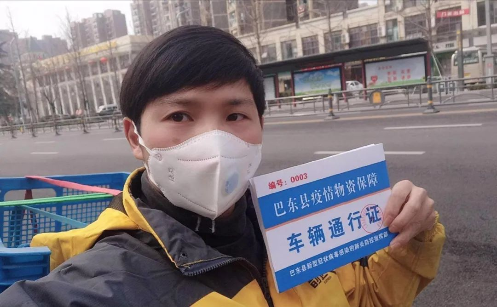
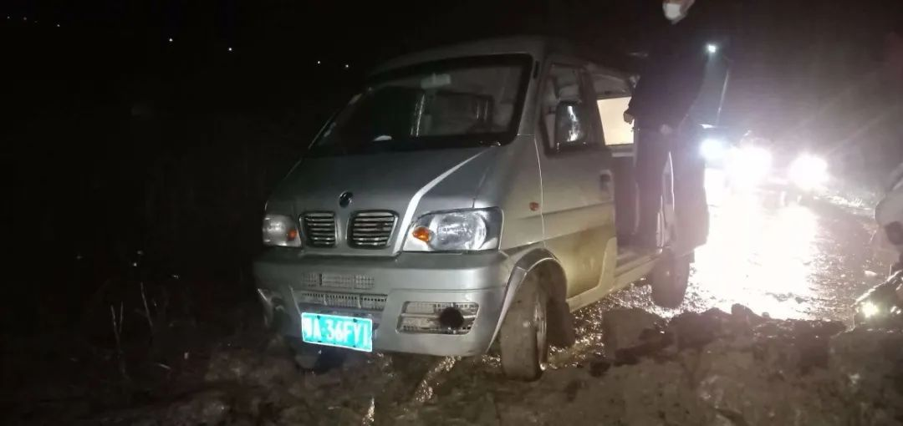

口述实录 | 109万只口罩，找遍世界寻货源，历经波折运回国
原文链接 备份链接 医护人员冲锋在一线有需要，我们国企和其他企业就要一起做好后勤保障工作，挑起企业抗击疫情的责任担当，相信众志成城、共克时艰不是一句空话，大家一起努力，疫情终将过去，一切都会好起来。 口述 | 周 道 整理 | 周 洁 小 …

经过这次疫情，我对《我不是药神》这部电影感触特别深。我明白了平时物资储存的重要性，这样在特殊时期才能派上大用场。
口述 | 赵 勐
整理 | 王仲昀
我叫赵勐，干物流行业的。大年初一下午，我一个人在家睡觉。醒来看到微信群里有人说，仙桃那边有给武汉的医疗物资被卡住，出不来。我想，在家闲着也没事干，就去帮帮忙吧，看能不能把那批货运出来。反正从武汉到仙桃，我开车来回也就三个多小时。
于是下午六点我就出发了。没想到，那天夜里我的车陷进了乡下的泥巴地，我在空无一人的地方被困了一夜，没吃没喝，手机没电。更想不到的是，这一去就是好多天。从那天开始，我就一直往返仙桃和武汉之间运输、配送物资。

赵勐送物资途中
接送医务人员上下班，看能不能找到女朋友
大概过年前几天，有一天我去了武汉附近乡下，想要为过年准备一点烟花。没想到回来之前，有朋友让我路上看看能不能帮忙买点口罩。他告诉我，当时武汉已经买不到口罩了。于是我就去找那些卖口罩的店，想着多买点回去可以分给其他人。没想到最后被放了鸽子，人家不卖了。这是我对疫情的最初感受。
从乡下回到武汉没多久，我就看到朋友圈有人求助，说找人帮忙运物资和接送医护人员上下班。因为我单身嘛，我89年的，到现在还没结婚。我就有个私心，想着“患难见真情”，准备去接送医护人员，帮忙的同时看看能不能搭识个女朋友。
我平时是做物流的，有两辆面包车。接了几趟之后，我了解到，为医院配送物资更紧要一点，医院很缺人去送物资。突然之间，儿女之情，好像就不重要了。
第一次出车，被困在乡道上一整夜
那天晚上是疫情暴发后，我第一趟去运物资。当我把车开到蔡甸和仙桃交界的地方，因为当时武汉已经封城，国道不让走，导航就让我走了乡道。大晚上，乡道路况不好，我开得很慢。结果晚上九点多，路过一片泥巴地，我的车就陷进去出不来了。我先是给警察打电话求助，但因为我没法证明我是去帮忙运物资的，而且地处武汉仙桃交界处，他们也解决不了。我又找朋友帮忙，当时我联系了武汉抗疫志愿者联盟的总协调人邓明锋先生，但他们的货车也没有能用的拉绳。
尝试之后，都没办法，我就只能在原地等待。我那辆车上空调坏了，我出来时又没穿秋裤，就觉得很冷。然后没吃的没喝的，我手机电也快用完了。关机前，我把定位给邓先生发过去了，就说如果来找我的话，我就在这。虽然我也不知道那地方到底是哪。因为有点怕，我也不敢睡觉，就只能眯一会儿。大概夜里三点多我睡了过去，早上五点就醒了。

大年初一晚上，赵勐被困在乡道上

被困第二天，赵勐招来挖掘机帮忙
醒来后，我下车去找附近路过的车辆帮忙，结果不行；后来又去村子里找农民借工具，还是不行；最后，找了个开挖掘机的，我给了对方400块钱，终于把车子拖了出来。被困了一晚上后，我只想赶紧去仙桃，没想过原路返回武汉。因为我已经费了这么大力气开出来，不想空车回去，我一定得去拉点什么。
那天白天，我在去仙桃的路上一直找商店给手机充电，我不能跟别人失联。然后经过前一晚的事情，我顺带找人借被子，以防后面还要在车上睡觉。有个阿姨很好，送给我一床旧被子。路上在一家小店吃泡面的时候，老板儿子听说我是从武汉出来的，就让我吃完赶紧走。
一路上因为封城，很多路走不了，各种路障，等我到仙桃，已经是大年初二晚上。正常一个多小时就到的路程，结果那天用了一天。当晚，我在仙桃找酒店住宿又找了好几个小时，因为很多也关门了。
被人怀疑倒卖物资，曾想过放弃
那天我到了仙桃后，照理说找到之前求助的人，把他们的物资拉上车送回武汉就行。但我根据平时物流工作的经验，发现那边比较混乱，没有人统筹整合物资，资源没有被最好地利用。这样一来，我决定留在那边帮忙。
后来我找到当地一家公司合作，在他们的办公大厅，成立了一个临时的物资基地。我按照平时送快递的方式，在基地开始接收和配送物资。这些物资大多是要送给武汉的各大医院。仙桃当地有物资送到我这里来，每一笔我都做好记录，什么人送的，送了什么，送到武汉哪里，就跟快递站一样。之后，我再负责把仙桃出来的物资统一转送到武汉各个医院，精确到各个科室。
很多时候我们是凌晨去送货。晚上11点从仙桃出发，这样1点左右到武汉，然后分好货送到医院。因为医院的医生护士交班一般是早上6点，我们争取在人家交班之前送到，这样能确保他们上班前用上。
一开始在仙桃做基地的时候，我住在一个小宾馆，结果没几天宾馆被举报了，说有武汉来的人。那个宾馆的老板人很好，我住了几天，没有收我房费。所以被举报了，我也不想给老板添麻烦，就带着被子在自己车上睡了几天。反正我当时每天睡觉不超过三小时，就算睡觉了手机上还是一直被各种信息“轰炸”。
从那时候开始，我算是正式开始了志愿者的工作。到现在快一个月了，身边有一些人中途退出了，我想说不能怪别人，我非常理解，因为这些完全是无回报的事。有人说，负担不起油费，去跑货拉拉赚钱去了。就我个人而言，这段时间的油费已经上万了，这些都是我自己出的。
但我中间不能接受的是，有一天在一个志愿者车队群里，我被人怀疑，说我倒卖物资。我不知道为什么会有人这样看我，我送的物资都是直接到武汉的医院，根本不经过私人仓库之类。所以当时我心里很不好受，这么忙还要被人这样怀疑，心想在家呆着不好吗？
于是，我就在家休了两天，结果发现已经完全不行，无法休息。每天一觉醒来，看到微信上那些求助信息，我觉得在家没有一点意义，又出去“重操旧业”。
从第一次去到现在，仙桃那边捐赠物资的对象各种各样，有个人，也有公司，还有商会、基金会。不过我也不管他们具体是谁，只要你是有东西要捐给医院，那我就负责给你送到。其实疫情面前，团队什么的不重要，你就是做事，你属于什么团队重要吗？我觉得我就像一块砖，哪里需要我就往哪填。
这么多天，往返仙桃和武汉，以及湖北其他地区的公路上，我有时候也觉得孤独。配送过程中，有时候我连两头的人都没见到。把货物搬上车，清点完毕，再送到目的地，搬下车，让对方签收，我的工作就完成了。那些收货的医院，顶多知道送货的司机叫赵勐，至于赵勐是谁，他们也不知道。

送往武汉市中心医院物资的签单
前几天，志愿者联盟的邓先生让我统计这段时间我送了多少货，说实话我也不知道具体送了多少吨。反正我的车每天至少一趟来回。我那辆小货车满载的话是4吨。4吨换成防护服或者口罩，就是8000套防护服，或者30万只口罩。
有一天下午，我和邓先生接到消息，说有个厂家提供了一批消毒液。一开始我们并不知道到底有多少，开着车就去了。到了才发现，原来有9吨消毒液，一共360桶。没有其他人帮忙，我们俩一箱箱搬上货车，搬了整整六小时，从下午三点搬到晚上八点多。搬完后，我们两个人累得腰都直不起来。
我大多数时候都是一个人干活，所以几乎没有什么“工作照”。又有什么时间拍照呢？忙的时候根本想不起来拍照片。这些我都无所谓的，我也不是想证明什么。
经过这次疫情，我对《我不是药神》这部电影感触特别深。我明白了平时物资储存的重要性，这样在特殊时期才能派上大用场。现在我在我们小区里的菜鸟驿站准备了一些防护服和口罩，我告诉住在小区或者附近的医护人员，只要提供相关的工作证明，我就免费送给你们。
睡觉。有事留言。昨晚上又通宵了。

征集令
《新民周刊》现面向全国征集新冠肺炎采访对象和真实故事：
如果你是参与抗击新冠肺炎疫情的医护人员或其家属，我们希望聆听你的“战疫”故事，也希望传达你的诉求。
如果你是确诊、疑似患者本人或家属，我们希望了解你和家人如何“抗疫”的过程，让外界了解你的真实经历。
如果你是疫情严重地区的普通市民，我们希望展现你的乐观，并倾听你所需的帮助。
如果你是公共服务人员或各类捐助者，我们希望看到你的“最美逆行”，记录下你的无私。
……
抗击新冠肺炎疫情，我们诚征对疫情了解的社会各界人士，提供相关线索，说出你的故事，让我们用新闻留存这一切。
《新民周刊》新冠肺炎线索征集值班编辑联系方式（添加时请简要自我介绍）：
周一：应 琛 微信号：paulineying0127
周二：金 姬 微信号：gepetta
周三：黄 祺 微信号：shewen-2020
周四：周 洁 微信号：asyouasyou
周五：孔冰欣 微信号：kbx875055141
周六：吴 雪 微信号：shyshine1105
周日：姜浩峰 微信号：jianggeladandong
✳如你需要捐赠物资，可与以下两位工作人员联系:王勇：WangYong-SH 吴轶君：rommy150708（添加时请注明“捐物资”，方便工作人员快速通过您的申请，谢谢。）
新闻是历史的底稿，你们是历史的见证者。期待你的故事、你的线索！

▼
大家还都在看这些
▼
新民周刊所有平台稿件， 未经正式授权
一律不得转载、出版、改编
或进行与新民周刊版权相关的其他行为，违者必究


原文链接 备份链接 医护人员冲锋在一线有需要，我们国企和其他企业就要一起做好后勤保障工作，挑起企业抗击疫情的责任担当，相信众志成城、共克时艰不是一句空话，大家一起努力，疫情终将过去，一切都会好起来。 口述 | 周 道 整理 | 周 洁 小 …
原文链接 备份链接 总体而言，港人对待疫情，后来就没有内地那么紧张了。我妈妈讲，她觉得作为一个香港居民，自己最大的感受是彷徨。她抱怨道，在香港，没工开等于没饭吃了；公司起先通知放假到24号，何时复工再议，而现在仍然是等通知的状态。 …
原文链接 备份链接 距新型冠状肺炎疫情公开已经过去二十多天了，从最初的混乱和恐慌至今，人们似乎在一点点变得平静。生活的节奏被打乱，取而代之的是对 “非正常状态” 的逐渐习惯。对很多参与在捐助行动里的人也是，紧张感从没消失，只是变得可以适 …
原文链接 备份链接 武汉水系多，长江汉水交汇，划分出武汉三镇。江水浩荡，码头就多，拼码头靠什么？靠“斗狠”。武汉的汉正街在江边，过去全国各地的小商贩来打货，江边有很多做苦力的“扁担”，与重庆棒棒一样，帮小老板们用扁担挑子来运货，靠苦力 …
原文链接 备份链接 文/雷成林 编辑/大风 突然爆发的疫情几乎让所有的线下门店停摆。在实体业溃败之后，电商护住了城市的血脉，快递员、外卖小哥、线上买菜维持着城市的运转。 在农村，疫情导致各地封村封路，所有的线下交易暂停，农户的果蔬被滞留在 …